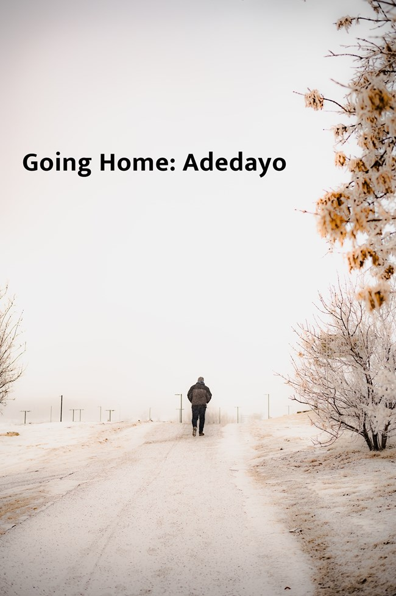

Going Home: Adedayo
Adedayo shut down his computer. He could not stop the smile that lined his face. He was happy to be going home early and was also happy to have met his deliverables which had seemed undeliverable earlier in the morning.
Mass on Independence Day

I did not feel independent or happy this morning. Yet I struggled to suppress hope which, like a joyful friend, tickled my sad mind in a bid to make me smile. It spoke of joy which came in the morning, but I would have none of that.
Mass on Independence Day
I did not feel independent or happy this morning. Yet I struggled to suppress hope which, like a joyful friend, tickled my sad mind in a bid to make me smile. It spoke of joy which came in the morning, but I would have none of that.